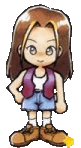

Karen |
|||||
|  Karen é a filha de Gotz e de Sasha, donos da vinícola. Como ela cresceu na vinícola sua paixão é o vinho e ela bebe muito (de fato, Karen é seu única competidora no campeonato de bebida do ano novo). Ela também ama dançar, tão quanto sua mãe costumava. Ela é muito dura e as vezes rude no começo, mas se abrirá com você um pouquinho para te conhecer. Se no fim do segundo ano ela está indiferente com você e você não restaurou a vinícola, ela deixará a aldeia para sempre. |
|||||
| Gosta: .De muitas bagas/berries, uvas silvestres/Wild Grapes, morangos/Strawnberries, tomates e de derrotar ela na bebida que acontece no ano novo. Não gosta: Insetos, peixe. Aniversário: 29 de Inverno Presente pra você: No seu aniversário, Karen vai dar uma pulseira charmosa que supostamente ajuda com o clima. Rival: Kai o trabalhador da vinícola. Torce o tornozelo(?): Na vinícola na árvore no canto esquerdo superior. Evento de Foto: Se você salvou a vinícola e você tem com Karen ao menos um coração amarelo, ela virá para você na noite de Outono do dia 7 e pedira a você para ir com ela para vinícola. |
|||||
| Sonho: | |||||
| "Papai! Eu nunca me meterei em problemas de novo! Por favor abra!"" ...Uma garota chorando...? "Sniff, sniff (alguém chorando)" "Oh, quem é você? de onde veio?" "Wow há um buraco aqui..." "...Meu papai está com raiva assim ele não pode vir para casa..." Ele foi para casa com a garota chorando segurando sua mão, então... ...Então? |
|||||
| Depois de ver este sonho, vá para vinícola. Karen chegará a você e oferece para dar um tour na vinícola. Você aceitaŕa e vocês irão para o depósito. Karen achará uma porta fechada e você estará preso dentro. Ela entra em pânico reclamando que ela está com fome. Sua primeira opção é esperar por um tempo até o pai dela vir para abrir para vocês dois. Sua segunda (e melhor) opção é achar ela no buraco no canto superior direito do depósito no primeiro andar, ao lado da máquina preta. Se você fizer isto, Karen pedira se você era quem ajudou ela a sair quando ela era jovem. Conte a ela que você estava e ela ficará feliz com você. |
|||||
| Onde ela pode ser encontrada: A programação de Karen é muito... Aleatória. O melhor lugar para achar ela é no bar, enquanto ela trabalha a noite. Durante o dia ela é um pouco de difícil de encontrar: As vezes ela vaga ao redor da vinícola, as vezes nas montanhas na cabana dos carpinteiros. Embora ela fica na praia todo o Domingo. Nos fogos de artifícios/Fireworks e vespera de natal/Starry Night, Karem estará na praia. No ano novo ela estará no bar. | |||||